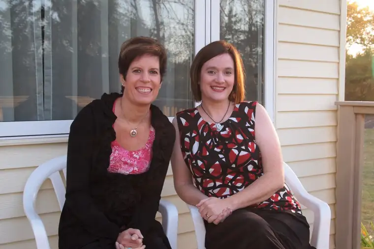
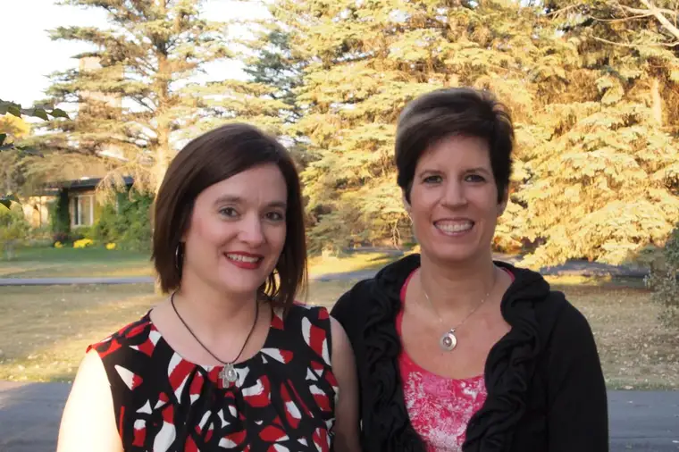

Enjoy!
Dec. 6, 2010: “Just when you thought you knew where kittens came from”
March 28, 2011: “Sending prayers across the river”
April 25, 2011: “Colors from Holy Week and Easter 2011”
May 2, 2011: “Stage fright and spaghetti”
Oct. 19, 2011: “She’s a writer! Celebrating Vicky Westra”
Dec. 14, 2011: “Finding faith, feeling alive: Moorhead woman launches positive battle after cancer diagnosis”
Oct. 1, 2012: “Finding rest, beauty at Carmel”
Oct. 3, 2012: “Uncovering the Writer-Soul”
June 12, 2013: “Prayers made of grass”
Oct. 30, 2013: “Emptying to Fill”
Nov. 13, 2013: “Carmel in another season”
Nov. 18, 2013: “Carmel in Brown, still brilliant”
Oct. 13, 2014: “Fall at Carmel through Vicky’s eyes”
Oct. 15, 2014: “The Colors of Carmel: Fall 2014”
July 15, 2015: “The Unforeseen Blessing: Carmel Again”
Aug. 9, 2015: “Faith Conversations: Monastery known for prayer portal for region”
Aug. 2, 2015: “Faith Conversations: The Calling: Path to being Christ’s bride included military stint” (Photos by Vicky Westra)
Nov. 23, 2015: “Frosted Carmel: Another season of surprise and delight”
May 18, 2016: “Becoming unruffled at Carmel”
Sept. 28, 2016: “Stories from the Sidewalk (from Carmel): ‘Pray for us sinners…'”
Oct. 28, 2016: “Sacred Photo: The handiwork of a friend”
Feb. 15, 2017: “Calming down at Carmel”
July 16, 2017: “Faith Conversations: North Dakota nun celebrates 60 years as a Carmelite”
